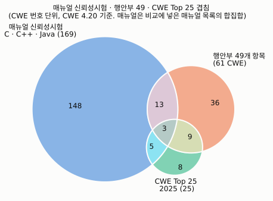
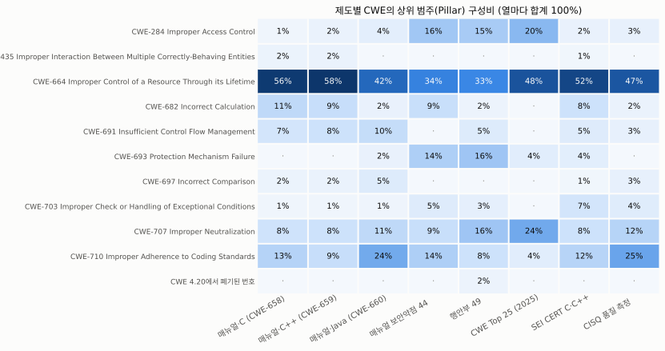
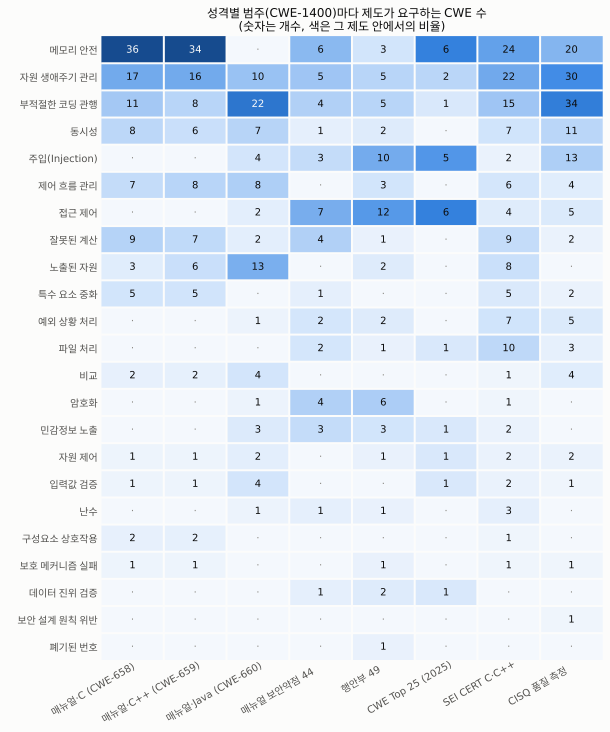

국방 SW 보안약점 기준, 얼마나 겹치나
방사청 매뉴얼 신뢰성시험(취약점 점검 CWE-658·659·660, 보안약점 44개), 행안부 개발보안 49개 항목, CWE Top 25(2025)를 CWE 번호로 맞춰 겹침을 셉니다.
읽기 전에: 이 결과는 공개적으로 확인할 수 있는 요구 목록끼리 비교한 것이며, 비공개 기준은 들어 있지 않습니다. 매뉴얼 보안약점 44개는 2차 자료를 학술 인용 기준으로 인용했습니다.
분석 범위와 한계를 먼저 확인해 주세요.
제도별 CWE 수
각 제도가 요구하는 CWE 번호 개수와, 그 가운데 다른 어느 제도에도 없는 고유 항목 수
제도 쌍별 겹침 (Jaccard 유사도)
교집합 ÷ 합집합. 1이면 두 목록이 같고 0이면 전혀 겹치지 않습니다. 칸을 누르면 공통 CWE가 아래에 나옵니다.
01
칸을 눌러 두 제도의 공통 CWE를 확인하세요.
성격별로 묶어 보기
MITRE CWE-1400 뷰는 모든 CWE를 메모리 안전, 주입, 접근 제어 같은 22개 범주 중 정확히 하나에 넣습니다. 칸의 숫자는 그 제도가 요구하는 CWE 수이고, 색이 진할수록 그 제도 안에서 비중이 큽니다. 칸을 누르면 해당 CWE가 아래에 나옵니다.
비중 낮음높음
칸을 눌러 범주에 속한 CWE를 확인하세요.
그림
보고서용 그림입니다. analysis/plot_overlap.py가 다시 만듭니다.



CWE별로 찾아보기
어느 CWE가 어느 제도에 들어 있는지 표로 봅니다. ● 표시가 그 제도에 포함된다는 뜻입니다.
분석 범위와 한계
아래 다섯 가지 이유로 이 페이지의 숫자는 국방 SW 시험 부담 전체가 아니라 공개 목록 사이의 관계로 읽어야 합니다.
- 공개 자료만 비교함. 공개 자료로 항목을 확인할 수 있는 목록만 넣었습니다. 매뉴얼 CWE 뷰와 보안약점 44개, 행안부 49개, CWE Top 25가 여기에 해당합니다. 국방사이버안보훈령 보안측정 기준, 국방기술품질원 체크리스트, 국방부·각 군·업체의 자체 기준, K-RMF 세부 통제는 비공개이거나 원문을 구할 수 없어 뺐습니다. 비공개 기준까지 넣으면 공통 항목은 늘고, 고유 항목은 줄 수 있습니다. 또한 매뉴얼은 도구가 지원하는 CWE를 적용하고 나머지는 사업별 협의로 정하도록 합니다. 그래서 실제 시험의 점검 범위는 사업마다 다르고 공개되지 않으며, 이 페이지는 문서상 최대 범위를 비교한 것입니다.
- 매뉴얼 44개는 2차 자료를 인용함. 매뉴얼 별책(2020)에 발췌 시 방위사업청장 승인 조항이 있으나, 학술 인용 기준(저작권법 제28조·제37조)에 따라 CWE 번호와 중복여부 표시만 출처를 밝혀 인용했습니다. 목록은 제2022-6호에서 추가되었고 현행본은 제2024-6호인데, 현행본 원문과는 대조하지 못했습니다. 행안부 49개는 KISA 「소프트웨어 개발보안 가이드」(2021.12.29) 원문의 항목별 참고 CWE로 확인했습니다.
- CWE 버전을 4.20으로 고정함. 매뉴얼은 더 오래된 CWE를 기준으로 했습니다. 그래서 매뉴얼 44개 표가 "기존 뷰와 중복"이라고 한 25개 중 9개가 현재 뷰에는 없습니다.
- CWE 번호가 같을 때만 겹친다고 셈. 상위·하위 CWE 관계(예: 119와 787)는 세지 않았습니다. 상위 번호를 주로 쓰는 행안부 목록의 겹침은 작게 나올 수 있습니다.
- 목록이 같아도 시험이 같은 것은 아님. 제도마다 다른 탐지·허용 기준, 오탐 소명 절차, 도구, 적용 대상은 비교하지 않았습니다.
자세한 설명과 보고서용 문안: docs/B_분석범위와_한계.md
데이터를 읽지 못했습니다. GitHub Pages 주소로 열거나, 저장소 폴더에서 python -m http.server를 실행한 뒤 열어 주세요.